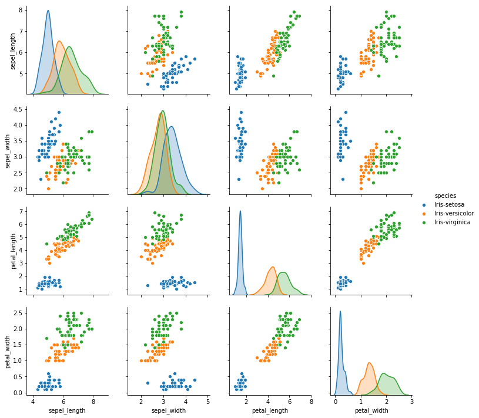

2.3 探索数据
在将数据读入到DataFrame对象后，接下来对 四个特征值 对 分类 的影响进行可视化分析。
2.3.1.导入依赖包
在程序文档的开头，导包的位置添加以下语句：
import matplotlib.pyplot as plt
import seaborn as sns
完整的导包代码是：
## 导包
import pandas as pd
import matplotlib.pyplot as plt
import seaborn as sns
Matplotlib 是一个Python 的2D绘图库。matplotlib 的 pyplot 子库提供了和matlab类似的绘图API，方便用户快速绘制2D图表。
Seaborn 是一种基于 matplotlib 的图形可视化python库。它提供了一种高度 交互式 界面，便于用户能够做出各种有吸引力的统计图表。Seaborn其实是在matplotlib的基础上进行了更高级的API封装，从而使得作图更加容易，在大多数情况下使用Seaborn就能做出很具有吸引力的图，而使用matplotlib就能制作具有更多特色的图。
2.3.2.可视化特征与分类的关系
选中 3.探索数据 的单元格，插入新的代码单元格，输入以下语句：
sns.pairplot(iris,hue='species')
运行，得到如下图形：

函数 pairplot 作用是用来进行数据分析，画两两特征图。
从图中可以看出，仅使用两个特征 时，setosa （在图中用蓝色表示）和 另外两种鸢尾花 就会有比较明显的分界。但鸢尾花versicolor 与 virginica 仅使用两个特征时没有明显的分界。
因此，我们可以先使用两个特征，例如 petal_length , petal_width，建立模型，来完成两种鸢尾花setosa和versicolor的分类。
参考文献
1.pandas.DataFrame选取/排除特定行 https://blog.csdn.net/yuanxiang01/article/details/79285769